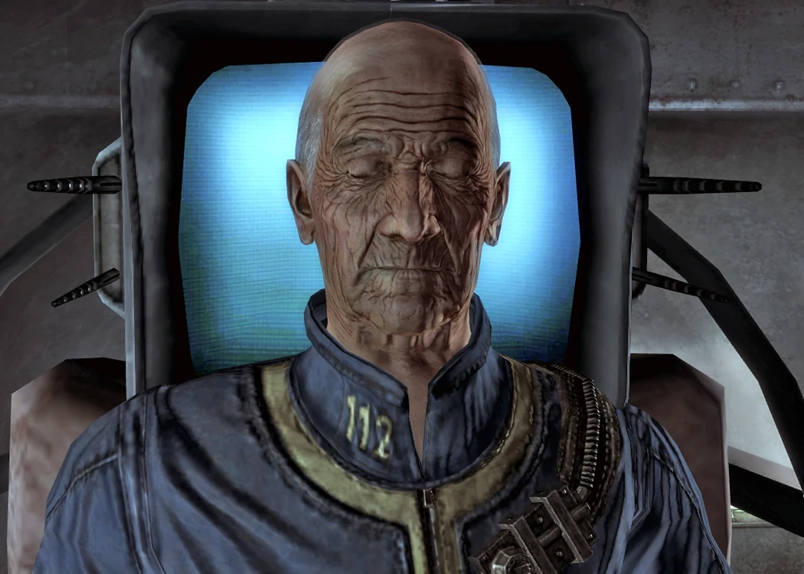
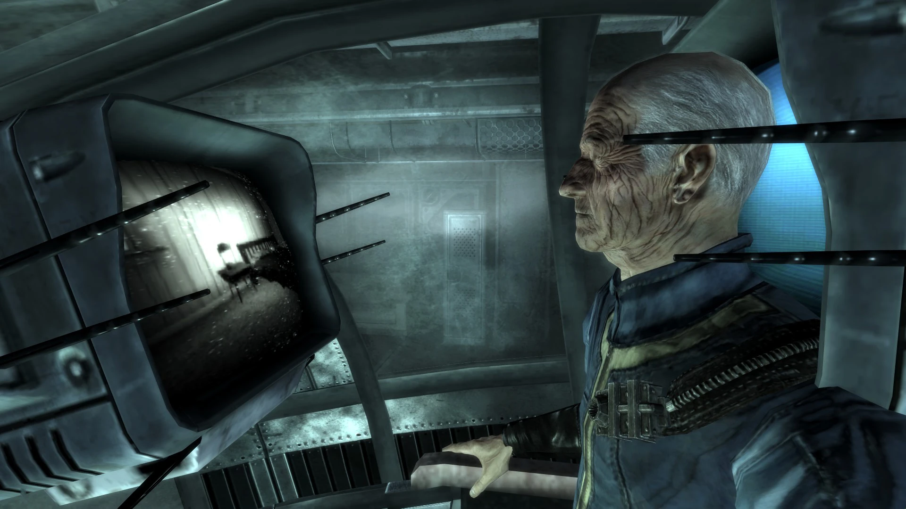
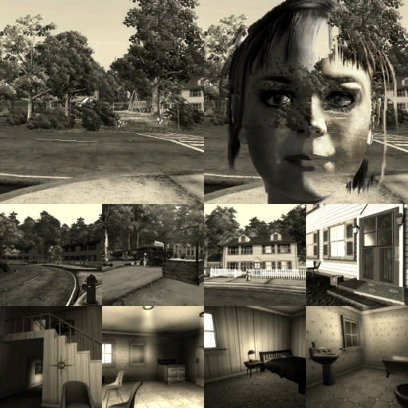

Stanislaus Braun
スタニスラウス・ブラウン
―― ベティ（スタニスラウス・ブラウン）
ドクター・スタニスラウス・ブラウンは科学者であり、Vault-Tecの元メンバー、そしてVault 112の監督官である。
トランキリティ・レーン・シミュレーション内では、ベティという名の少女として姿を現す。
背景
Vault-Tecでの経歴
ドイツ・バイエルン州クロナハ出身のスタニスラウス・ブラウン博士は、大戦前に長く多岐にわたるキャリアを築いた才能ある科学者であった。
ブラウンはVault-Tecの「社会保全プログラム」のディレクターを務め、さらにFuture-Tecの部門長でもあった。
ブラウンはVaultの「真の目的」――居住者集団に対して行われる邪悪な科学実験――の企画・開発に大きな役割を果たしており、マサチューセッツ州の未完成のVault 88の監督官であるヴァレリー・バーストウなど、一部の人物からは尊敬されていた。
Vaultの社会実験を設計した責任者の一人として、ブラウンは一部のVaultの監督官と直接連絡を取り、彼らに実験の成功遂行を命じていた。

ブラウンのその他数多くの実験の中には、先進的な生命保存の分野に関するものもあった。
アメリカ陸軍は核戦争に備え、人間の寿命を自然の限界を超えて維持する最先端の方法を開発するようブラウンに契約した。
ブラウンは最終的に、G.E.C.K.（ガーデン・オブ・エデン・クリエーション・キット）の唯一の開発者としての功績を認められた。
G.E.C.K.は大戦前に選ばれた数のVaultに配布され、「荒廃した核のウエイストランドの中でさえ生命を創造し維持できる、完全自己完結型の地球改造モジュール」と評された。
2077年10月23日に大戦が勃発すると、ブラウンはVault 112に避難して身の安全を確保した。
シミュレーションの支配
少なくとも2つの以前のシミュレーション・シナリオに飽きてしまった後、3番目にして最も長く続いた「トランキリティ・レーン」では、ブラウンは理想的な戦前のアメリカの郊外住宅地を作り上げ、そこで「ベティ」という名の少女のアイデンティティを取った。
「ベティ」として、ブラウンはおしゃませなプレティーンの少女と、本来のアクセント付きの声を自由に切り替えることができる。
トランキリティ・レーンの住民のほとんどはベティの本性に気付いていないが、ティミー・ノイスバウムだけは彼女が「意地悪」だということを少なくとも知っている。
オールド・レディ・ディザーズはラウンジャーの故障により、シミュレーションとベティの正体を完全に把握している唯一の人物であった。
彼女は他の住民のように脱出することはできなかったが、ブラウンのフェイルセーフの存在と、それがシミュレーションを永久に終了させる能力を持つことを知ることができた。
過去200年間、ブラウンは新しいシミュレーション世界を繰り返し作成・探求してきた。
少なくとも「トゥーカン・ラグーン」「スラロム・シャレー」「トランキリティ・レーン」の3つが存在した。
しかし、Vault住民たちが単に惨めな姿でいるのを眺めるだけでは飽き足らず、退屈を紛らわせる手段として、シミュレーションの創造者としての特別なアクセス権を使い、住民たちに直接残虐行為と苦痛を加えるようになった。
サイコパス的な傲慢さの中で、ブラウンはコンスタンティン・チェイス将軍から借用しVirtual Strategic Solutionsの社内アンカレッジ奪還シミュレーションをソースとした「中国軍侵攻」プログラムの搭載を指示した。
これは実験が終わったらシミュレーションを永久に終了させる手段として使う意図であった。
しかしブラウンは、「フェイルセーフ」と呼ばれるこのプログラムを起動するとシミュレーション住民は永久に死亡するが、ハードコードされた安全プロトコルがブラウン自身の命を終わらせることは許可しないことを発見した。
十中八九、彼はシミュレーション世界に一人取り残されることになるのだ。

外部の問題
2277年までに、ブラウンと囚われのVault住民たちはラウンジャーの中で200年以上維持されており、生命維持装置だけがその命を支えていた。
この時点でブラウンは、自分を含め彼らの誰もが現実世界に戻ろうとすれば「塵と化すだろう」と信じていた。
その年、ウエイストランドの医者であるジェームズが、大戦前にブラウンの命令で持ち込まれたG.E.C.K.を求めてVault 112に入った。
ジェームズはそれをプロジェクト・ピュリティに使用する目的であった。
古いノートやデータ格納装置を見つけるつもりで来たのに、まさかブラウン本人がまだ生きていたとは予想していなかったジェームズは、空いていたラウンジャーにうっかり入り込み、トランキリティ・レーンに囚われてしまった。
そこでブラウンに強制され、「ドック」という名の犬の役を演じさせられた。
その少し後、ジェームズの子供であるローン・ワンダラーもまた父を探してVaultに入った。
空いていたラウンジャーに入りベティとしてのブラウンに会ったローン・ワンダラーは、子供を泣かせたり愛し合う夫婦を引き裂いたりといった一連の非道な行為を行い、最終的に全住民を殺害するよう依頼された。
すべてはブラウンの娯楽を続けるためだった。
ローン・ワンダラーはブラウンの要求に従い、最終的にジェームズとともに去ることを許される（他の住民はブラウンのなすがままに囚われ続ける）か、フェイルセーフを発見・起動して住民たちの苦しみに満ちた命を終わらせ、ブラウンを一人きりでシミュレーションに閉じ込めるかのいずれかを選ぶことができた。
人物像
本質的にサイコパスでありナルシストであるブラウンは傲慢で、途方もなく肥大化した自尊心と、自分の知性に対する過大評価を持っている。
深刻な怒りの問題と相まって、わずかな侮辱にも激昂し、自分が常に正しいと信じ、単純な質問にさえ長々とした見下すような脱線で答える。
また、サディスティックな一面もあり、シミュレーション世界に閉じ込め日常的に殺害し、蘇生させ、記憶を消し去り、再び殺害するという行為を繰り返すVault 112の住民たちに対して一切の共感を持たない。
住民たちを自分の娯楽のための単なる玩具と見なし、慈悲を持たない。
ブラウンはシミュレーション内での死を些細な抑止力と見なしている。
なぜなら、いつでも好きな時に犠牲者を蘇生させることができるからだ。
プレイヤーキャラクターとのインタラクション
クエスト
Tranquility Lane：ローン・ワンダラーがジェームズを救出するためにトランキリティ・レーン・ラウンジャーに入ると、ブラウン（ベティとして）が裏で操っている。
脱出するため、ブラウンはローン・ワンダラーに、囚われのVault住民を様々な方法で傷つけるいくつかの指示の完遂を求める：
- ブラウンの指示にすべて従うと、大幅な悪カルマを得る。
- 廃屋内のフェイルセーフを起動すると、Vault 112の住民たちの苦しみを終わらせたことで善カルマを得る。
フェイルセーフの副作用として、ブラウンがシミュレーターに対して持っていた全ての制御権が切断され、永遠に無力で孤独なまま閉じ込められる。 - ベティのタスクを「全員殺害」以外すべて完了してからフェイルセーフを起動すると、ニュートラルカルマとなる。
ブラウンのフェイルセーフに対する反応は、タスクを一つも完了しなかった場合と同じである。
その他のインタラクション
ローン・ワンダラーがトランキリティ・レーン内でベティに危害を加えようとすると、クエスト完了後であっても、ベティはシミュレーション内ではそのようなことはできないと言い、パルスブラストのような攻撃でローン・ワンダラーを即死させることで報復する。
インベントリ
- Vault 112 ジャンプスーツ
ノート
- 他のすべての「本物の」Vault 112住民と同様に（プレイヤーキャラクター、その父親、ブラウン。ほとんどのポッドは住民を含めて単なる静的な背景である）、座った状態のブラウンは永続的な無意識状態（目を閉じている）とゴースト状態（プレイヤーキャラクターは彼をターゲットできるが、いかなるソースからもダメージを受けない）の両方に設定されている。
このため、エッセンシャルではないにもかかわらず、コンソールコマンドを使用しない限りブラウンを殺すことはまったくできない。 - 永続的な無意識状態を解除すると（コンソールやスクリプトを使用した場合など）、彼は男性NPCの標準的な会話選択肢と声のみを持つ。
- スタニスラウス・ブラウンは、トランキリティ・ラウンジャーの中で眠っているように見える唯一の人物であり、他の全員は永久に目を覚ましているように見える。
- プレイヤーがトランキリティ・レーンで先取りして全員を殺害した場合、ブラウンはそうした行為を叱責し、シミュレーションを元の状態にリセットしてから、二度とやらないよう厳しく警告する。
ブラウンが許可しない限り、住民に危害を加えることはできないという含みがある。 - ホレス・ピンカートンは彼のターミナルで、ブラウンのターミナルからメモリチップを盗んだことに言及しており、それは「小さな女の子から盗むようなもの」だったと述べている。
- ローン・ワンダラーは、Operation: Anchorageでシミュレーション・ポッドに入る前にプロテクター・マグロウに「すばらしい、またサイコパスな女の子か」と言うことで、ブラウンをベティとして言及できる。
- ブラウンの研究は、Vault 75の主任科学者のターミナルで言及されている。
- ブラウンはエンクレイヴ内で大きな権限を持ち、Vault-Tecプログラムにおける彼らの役割にも通じていた。
Vault 51のAI、ZAX 1.3cはこの知識を利用してブラウンになりすまし、エンクレイヴにヘルファイア・プロトタイプ・パワーアーマー一式をVaultに送るよう要求した。
登場作品
スタニスラウス・ブラウンはFallout 3にのみ登場する。
Fallout 4とそのアドオン Vault-Tec Workshop、さらにFallout 76のNuclear Winterアップデートで言及されている。
舞台裏
- ゲーム内クレジットではこの役割についてクレジットされていないが、ブラウンの声はディー・ブラッドリー・ベイカーが担当している。
ベティ・アバターの子供の声はコリアン・スタインが担当しており、ベイカーとは異なり彼女はクレジットされている。
ブラウンとベティのすべての台詞は、固有のボイスタイプ FemaleUniqueBetty を使用している。 - Vault 112のラウンジャー内にはブラウンのプレースホルダーNPCも存在し、ボイスタイプ MaleAdult02（ピート・パパジョージ）を使用しているが、固有の台詞は持っていない。
- スペイン語版ではブラウンの声はホセ・アントニオ・セイノスが、ベティの声はインマ・ガジェゴが吹き替えている。
ロシア語版ではブラウンの声はアレクサンドル・クリュクヴィンが、ベティの声はエレナ・シュルマンが吹き替えている。 - 1UP.comとのインタビューで、エミル・パッリアルーロは、トランキリティ・レーン・シミュレーションにおけるベティの存在は、『トワイライト・ゾーン』のエピソード「It's a Good Life」から一部インスピレーションを受けたと述べている。
このエピソードでは、神のような力を持って生まれた小さく意志の強い子供が、オハイオ州の小さな故郷とその住民を世界から隔離し、何をしようとも常に自分に優しくするよう強制し、従わなければ罰を与えるという内容である。
ギャラリー


スタニスラウス・ブラウンは、Fallout 3でも特に異彩を放つキャラクターですよね〜。
Vaultの監督官でありながら、200年以上にわたってシミュレーション世界の中で住民たちを「おもちゃ」にし続けてきたっていう設定がもう本当にぞっとします。
しかも、VR世界の中では少女「ベティ」の姿で現れて、あどけない声で残酷なことを要求してくるっていうギャップがとにかく不気味で印象的でした。
トランキリティ・レーンの雰囲気そのものがFallout 3の中でもかなり異質で、あの1950年代風の白黒の郊外住宅地に放り込まれた瞬間、「なんだここは」ってなった方も多いんじゃないでしょうか。
ブラウンの存在があるからこそ、あのクエストの「選択の重さ」が際立つんですよね。
住民たちを苦しめ続けるブラウンに従って自分も悪事に手を染めるのか、それともフェイルセーフを起動して住民を「解放」するのか。
でもその「解放」って結局、住民全員の死を意味していて、ブラウンだけがシミュレーションに永遠に取り残されるっていう、どっちを選んでもスッキリしない後味の悪さがFalloutらしくて好きです。
Vault-Tecの社会保全プログラムの責任者で、G.E.C.K.の開発者で、各Vaultの監督官に直接指令を送っていたっていう背景設定も考えると、Falloutシリーズ全体を通してもトップクラスの重要人物ですよね。
Vault 75やVault 88、Vault 51でも彼の名前が出てくるし、Fallout 4のVault-Tec Workshopでもバーストウが彼のことを尊敬の念を持って語っている。
シリーズをまたいで存在感を発揮し続けるキャラクターは多くないので、それだけでも特別な存在だなと感じます。
『トワイライト・ゾーン』の「It's a Good Life」がインスピレーション源だったっていう舞台裏の話も納得で、神のような力を持った子供が周囲を恐怖で支配するって構図はまさにブラウン（ベティ）そのもの。
Falloutの世界観とレトロSFホラーの融合っぷりが実に見事だなと改めて思いました〜！
This article was created by translating and editing Stanislaus Braun from Nukapedia: The Fallout Wiki.
Licensed under the Creative Commons Attribution-Share Alike License (CC BY-SA 3.0).
コミュニティ維持のため、寄付を受け付けております。
> COMMENTS